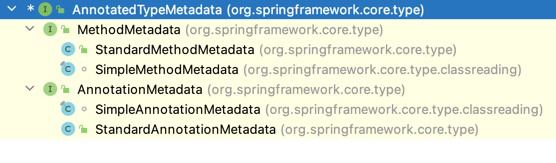

Spring AnnotatedTypeMetadata
Defines access to the annotations of a specific type (class or method), in a form that does not necessarily require class loading of the types being inspected. Note, however, that classes for encountered annotations will be loaded.
subclass hierarchy
- MethodMetadata is responsible to gain annotations metadata from method that annotated this annotation
- AnnotationMetadata is responsible to gain annotations metadata from class that annotated this annotation

AnnotationMetadata example
- AppConfig
@Configuration
@Conditional(MyCond.class)
public class AppConfig {
}
- MyCond, metadata class is org.springframework.core.type.classreading.SimpleAnnotationMetadata
public class MyCond implements Condition {
@Override
public boolean matches(ConditionContext context, AnnotatedTypeMetadata metadata) {
if (metadata instanceof AnnotationMetadata) {
System.out.println("MyCond matches AnnotationMetadata");
}
System.out.println(metadata.getClass());
boolean isAnnotatedConfiguration = metadata.isAnnotated(Configuration.class.getName());
System.out.println("MyCond matches " + isAnnotatedConfiguration);
return true;
}
}
MethodMetadata example
- AppConfig
@Configuration
@Conditional(MyCond.class)
public class AppConfig {
@Bean
@Conditional(MyMethodCon.class)
public Bar bar() {
return new Bar();
}
}
- MyCond, metadata class is org.springframework.core.type.classreading.SimpleMethodMetadata
public class MyMethodCon implements Condition {
@Override
public boolean matches(ConditionContext context, AnnotatedTypeMetadata metadata) {
System.out.println(metadata.getClass());
return true;
}
}